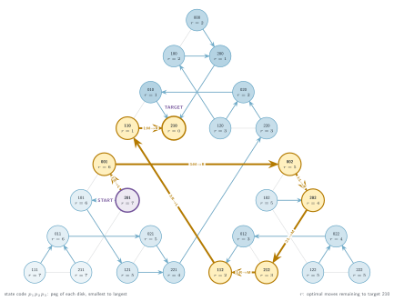
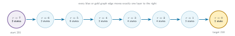
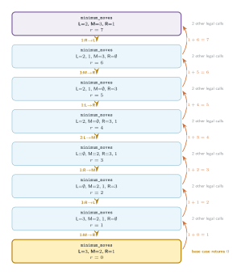
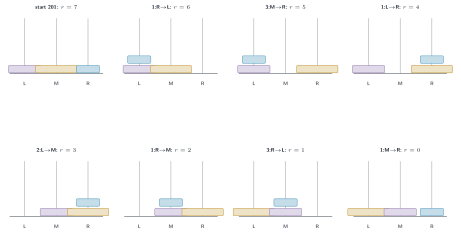

6. Tower of Hanoi: Arbitrary Legal States
A cyclic state graph and its target-directed optimal DAG
The start and target may be any legal configurations. The complete graph contains cycles; directing only moves that reduce target distance exposes an optimal DAG.
- State
- , three immutable bottom-to-top peg tuples
- Goal
- Reach an arbitrary fixed target configuration in the minimum moves.
- Base cases
- The target returns ; a state already on the current path returns .
On this page
- Problem, representation, and examples
- Recursive code: six legal actions and path-local cycle rejection
- Complete state graph with the target-directed shortest-path DAG
- Distance wavefront: quotient the graph into eight target layers
- One optimal branch: calls downward, return values upward
- The same path as physical peg configurations
Problem, representation, and examples
Problem. Find the minimum legal moves from any legal three-peg configuration to any other legal configuration. The target is fixed globally; the recursive state is the three named pegs.
Example 1 (used below). to moves.
Example 2. to moves.
There are legal states: assigning each disk to a peg uniquely determines its position because disks on a peg must be ordered.
Recursive code: six legal actions and path-local cycle rejection
All six semantic actions appear explicitly. The global set is marked on entry and unmarked on return, so it describes only the current path.
from math import inf
# Each peg is stored bottom-to-top; a smaller number is a smaller disk.
START_LEFT, START_MIDDLE, START_RIGHT = (2,), (3,), (1,)
TARGET_LEFT, TARGET_MIDDLE, TARGET_RIGHT = (3,), (2,), (1,)
# The only non-constant global: states on the current recursion path.
VISITED = set()
def can_move(source_peg, destination_peg):
if not source_peg:
return False
return not destination_peg or source_peg[-1] < destination_peg[-1]
def move_top(source_peg, destination_peg):
disk = source_peg[-1]
return source_peg[:-1], destination_peg + (disk,)
def minimum_moves(left_peg, middle_peg, right_peg):
# Base case: the arbitrary target configuration has been reached.
if (left_peg == TARGET_LEFT and
middle_peg == TARGET_MIDDLE and
right_peg == TARGET_RIGHT):
return 0
# Cycle base case: do not revisit a state on this branch.
state_key = (left_peg, middle_peg, right_peg)
if state_key in VISITED:
return inf
VISITED.add(state_key)
best = inf
# Choice 1: move the top disk from LEFT to MIDDLE.
if can_move(left_peg, middle_peg):
next_left, next_middle = move_top(left_peg, middle_peg)
best = min(best, 1 + minimum_moves(
next_left, next_middle, right_peg))
# Choice 2: move the top disk from LEFT to RIGHT.
if can_move(left_peg, right_peg):
next_left, next_right = move_top(left_peg, right_peg)
best = min(best, 1 + minimum_moves(
next_left, middle_peg, next_right))
# Choice 3: move the top disk from MIDDLE to LEFT.
if can_move(middle_peg, left_peg):
next_middle, next_left = move_top(middle_peg, left_peg)
best = min(best, 1 + minimum_moves(
next_left, next_middle, right_peg))
# Choice 4: move the top disk from MIDDLE to RIGHT.
if can_move(middle_peg, right_peg):
next_middle, next_right = move_top(middle_peg, right_peg)
best = min(best, 1 + minimum_moves(
left_peg, next_middle, next_right))
# Choice 5: move the top disk from RIGHT to LEFT.
if can_move(right_peg, left_peg):
next_right, next_left = move_top(right_peg, left_peg)
best = min(best, 1 + minimum_moves(
next_left, middle_peg, next_right))
# Choice 6: move the top disk from RIGHT to MIDDLE.
if can_move(right_peg, middle_peg):
next_right, next_middle = move_top(right_peg, middle_peg)
best = min(best, 1 + minimum_moves(
left_peg, next_middle, next_right))
VISITED.remove(state_key) # backtrack for sibling calls
return best
print(minimum_moves(START_LEFT, START_MIDDLE, START_RIGHT)) # 7Positive move costs ensure a shortest route is simple. With VISITED initially empty, exhaustive recursion finds its length.
Complete state graph with the target-directed shortest-path DAG
gray = complete cyclic graph blue arrows = every distance-decreasing choice gold = selected seven-move shortest path

Labels r are unrestricted distances to the target. Every blue or gold arrow decreases r by one; gray edges retain the full graph's cycles.
Distance wavefront: quotient the graph into eight target layers
Reverse BFS from the target assigns , the minimum remaining moves. Each circle groups all configurations with the same ; the counts sum to . An optimal route crosses one layer to the right per move. Edges within a layer remain in the full graph and are omitted from this distance summary.

One optimal branch: calls downward, return values upward

One optimal branch of the exhaustive search. The orange labels combine one move with the child's remaining cost.
The same path as physical peg configurations

Each label identifies the disk and source/destination pegs. The target is reached after seven moves.